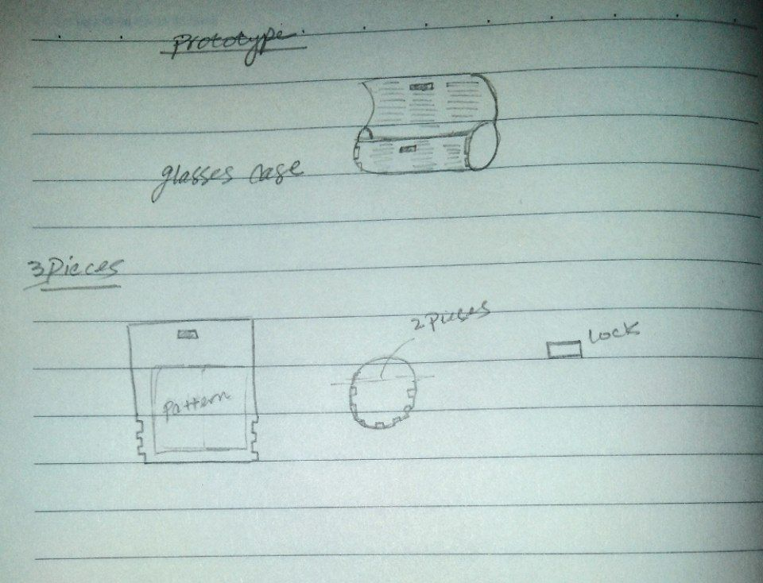
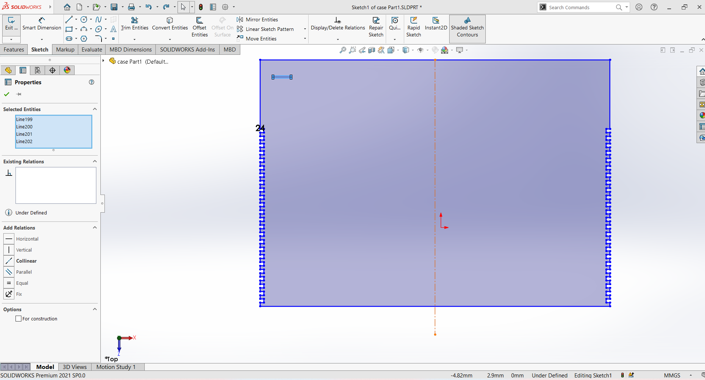
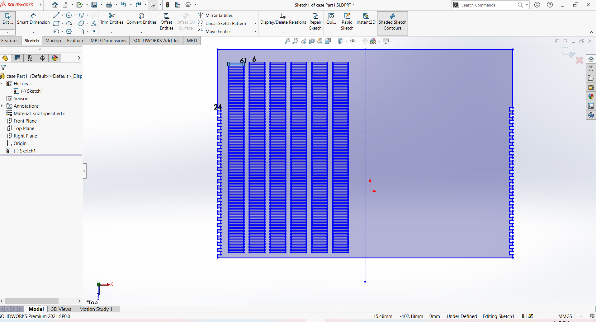

Step 1:finding an idea
Sure there are so many ideas to be printed by laser cutter, but here i'm looking for some requirments in my design.for examle design should be useable, contains joints and somehow trynna not to use screws if it possible. so i'm gonna make a sun glasses case that contains two types of joints as the following image.

Step 2: sketching a prototye
to make a desgin ike this it needs to sketch first how it looks like before using software tools that helps me imagine more how it will be implemented on software.
Step 3:Design on solid works
As a bignner on solid it wasn't that easy to make this design from first or even second time, it took my lots of tryals and much mistakes on design or dimentions and very stupid mistakes in designing the pattern which is the most important part of the design, cuz it makes wood flixable and can be folded to make a curve shape.
 Step 4:editting design
Realizing that your design contains lots of mistakes can below your mind after so many tryals, as it's obvious pattern is completly wrong so i'm gonna make a sample of the pattern so the frame and sides are easy to be designed.

Step 5:RD works
after compeleting the pattern, use RD works that defines which lines are vector or ruster to be cut on laser cutter